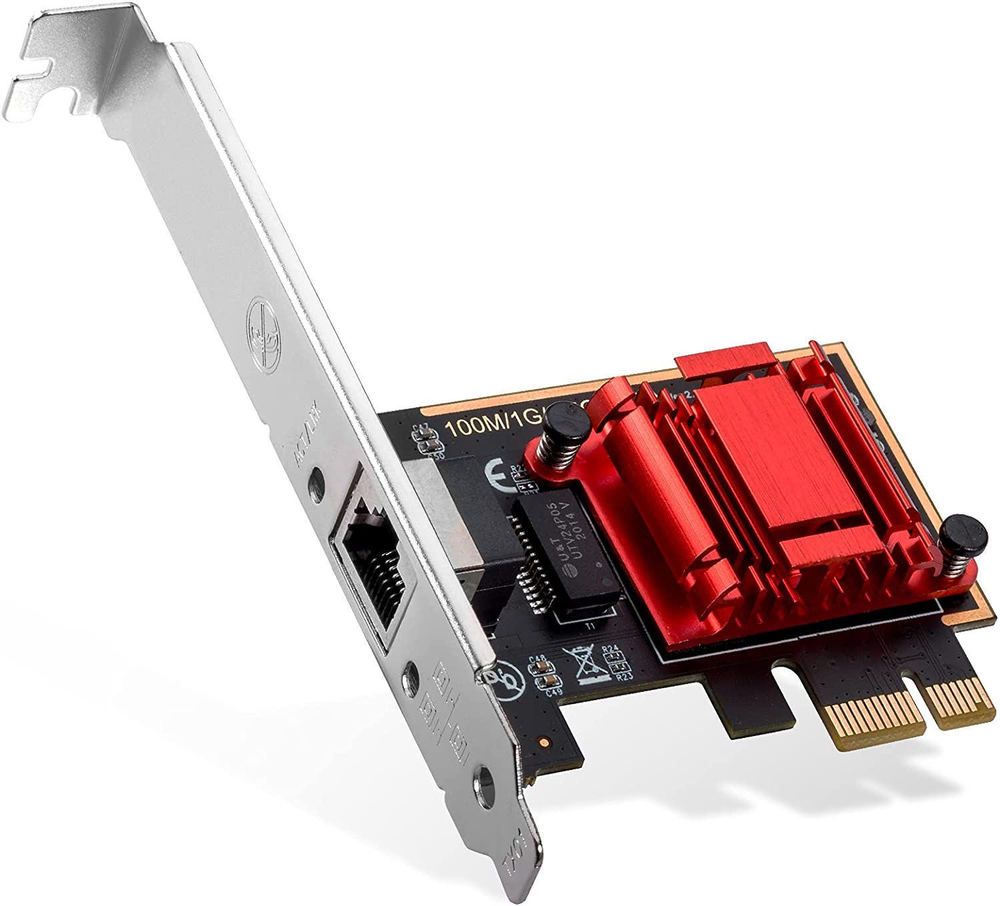
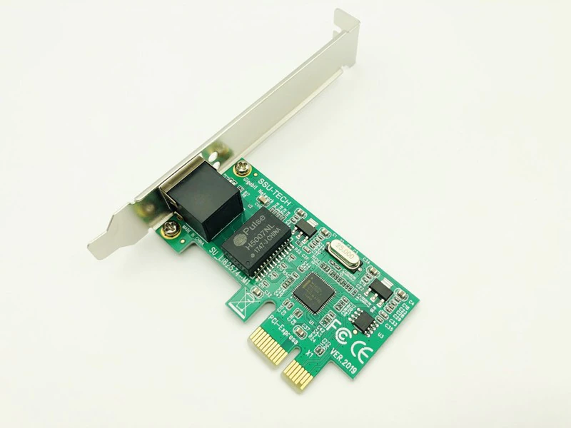

Web Page Design & Computer Peripherals
Network Interface Cards

A network interface controller (NIC, also known as a network interface card, network adapter, LAN adapter or physical network interface, and by similar terms) is a computer hardware component that connects a computer to a computer network. Early network interface controllers were commonly implemented on expansion cards that plugged into a computer bus. The low cost and ubiquity of the Ethernet standard means that most newer computers have a network interface built into the motherboard, or is contained into a USB-connected dongle. Modern network interface controllers offer advanced features such as interrupt and DMA interfaces to the host processors, support for multiple receive and transmit queues, partitioning into multiple logical interfaces, and on-controller network traffic processing such as the TCP offload engine.
PURPOSE:The network controller implements the electronic circuitry required to communicate using a specific physical layer and data link layer standard such as Ethernet or Wi-Fi.[a] This provides a base for a full network protocol stack, allowing communication among computers on the same local area network (LAN) and large-scale network communications through routable protocols, such as Internet Protocol (IP). The NIC allows computers to communicate over a computer network, either by using cables or wirelessly. The NIC is both a physical layer and data link layer device, as it provides physical access to a networking medium and, for IEEE 802 and similar networks, provides a low-level addressing system through the use of MAC addresses that are uniquely assigned to network interfaces.

PERFORMANCE AND ADVANCED FUNCTIONALITY: Multiqueue NICs provide multiple transmit and receive queues, allowing packets received by the NIC to be assigned to one of its receive queues. The NIC may distribute incoming traffic between the receive queues using a hash function. Each receive queue is assigned to a separate interrupt; by routing each of those interrupts to different CPUs or CPU cores, processing of the interrupt requests triggered by the network traffic received by a single NIC can be distributed improving performance. The hardware-based distribution of the interrupts, described above, is referred to as receive-side scaling (RSS). Purely software implementations also exist, such as the receive packet steering (RPS) and receive flow steering (RFS). Further performance improvements can be achieved by routing the interrupt requests to the CPUs or cores executing the applications that are the ultimate destinations for network packets that generated the interrupts. This technique improves Locality of reference and results in higher overall performance, reduced latency and better hardware utilization because of the higher utilization of CPU caches and fewer required context switches. Examples of such implementations are the RFS and Intel Flow Director.
With multi-queue NICs, additional performance improvements can be achieved by distributing outgoing traffic among different transmit queues. By assigning different transmit queues to different CPUs or CPU cores, internal operating system contentions can be avoided. This approach is usually referred to as transmit packet steering (XPS). Some products feature NIC partitioning (NPAR, also known as port partitioning) that uses SR-IOV virtualization to divide a single 10 Gigabit Ethernet NIC into multiple discrete virtual NICs with dedicated bandwidth, which are presented to the firmware and operating system as separate PCI device functions.
TCP offload engine is a technology used in some NICs to offload processing of the entire TCP/IP stack to the network controller. It is primarily used with high-speed network interfaces, such as Gigabit Ethernet and 10 Gigabit Ethernet, for which the processing overhead of the network stack becomes significant. Some NICs offer integrated field-programmable gate arrays (FPGAs) for user-programmable processing of network traffic before it reaches the host computer, allowing for significantly reduced latencies in time-sensitive workloads. Moreover, some NICs offer complete low-latency TCP/IP stacks running on integrated FPGAs in combination with userspace libraries that intercept networking operations usually performed by the operating system kernel; Solarflare's open-source OpenOnload network stack that runs on Linux is an example. This kind of functionality is usually referred to as user-level networking.